A simple Example and Tutorial
In this example, we create a class diagram with 3 classes (class1, class2, class3), and a LayersStack with 3 layers (layer2, layer1, bottom). The bottom layer control the 3 classes and all the available properties. The layer1 control Class1 and Class2. The layer2 control Class2 and Class3.
This example is also a tutorial, if you follow it step by step.
Create a new Class Diagram
Start by creating a Papyrus Class Diagram with 3 classes:
- Create a new ClassDiagram in a Papyrus model
- Create three classes: Class1, Class2, Class3
- Open the Papyrus ModelExplorer and the Property View.
You should have a diagram and model explorer like in the following figure:
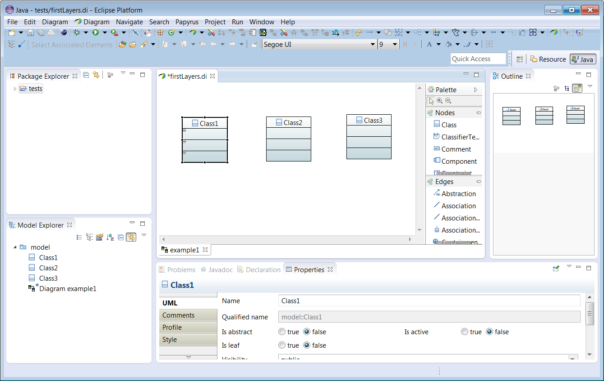
Open the LayersExplorer
To open the LayersExplorer:
- In the diagram, Right Click->Layers->Open LayersExplorer
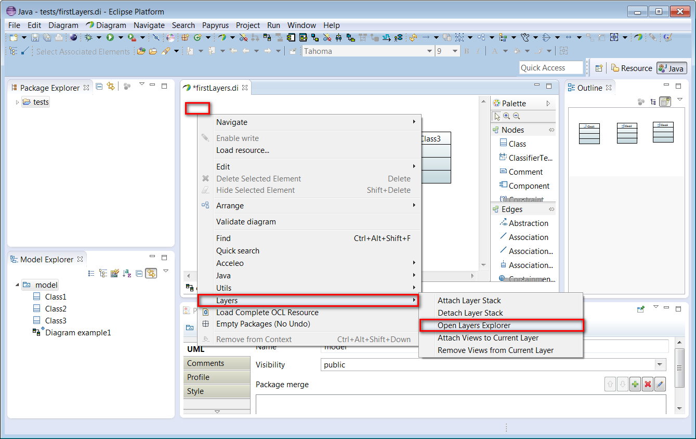
- The explorer should open (not necessarly at the same position as in the following snapshoot):
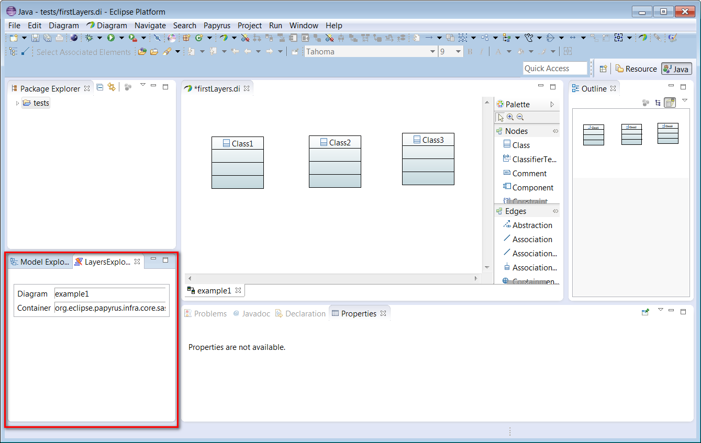
To attach a LayersStack to your diagram:
- Click in the diagram, then Right Click->Layers->Attach Layer Stack
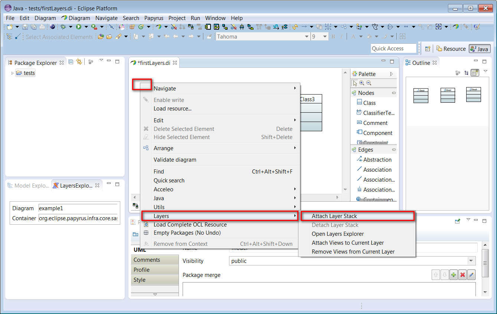
- The LayersExplorer should show the layers attached to the LayersStack. By default, there is a 'Layer Operator' of type 'Top Layer'. The 'Top Layer Operator' contains layers that are ordered from top to bottom. When computing the value for a particular (view, property type) couple, it search the first layer that define a value for the couple, and return this value.
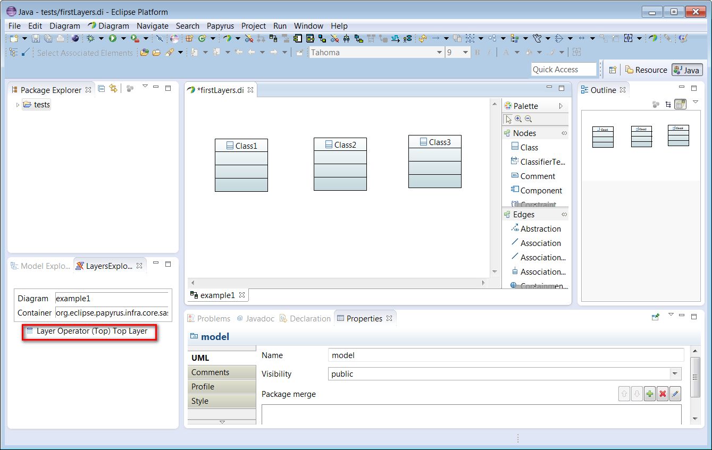
We need now to create a layer in the stack.
To create a new Layer in the LayersStack:
- In the LayerExplorer, select the Top Layer Operator
- right click->Layers->Create Layers ...->Create Layer
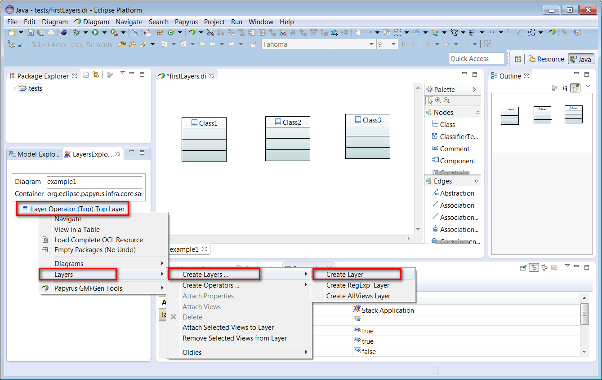
- A new layer is created:
- Open the tree node to see the layer (1)
- Select the layers tab in the Property view (2)
- Change the name of the layer to 'bottomLayer' (3)
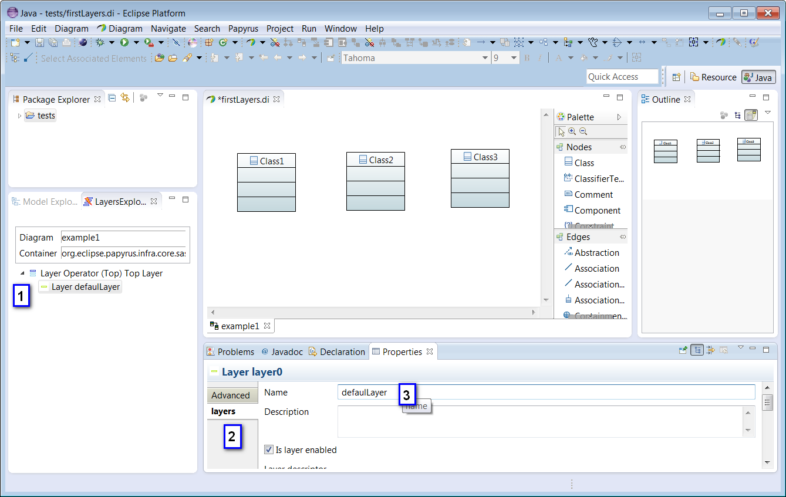
Attach Classes to the Layer
Attaching some classes (also called views) to a layer means that this layer will partially control the value of some properties for this attached classes.
Here, we attach the 3 classes.
To Attach the classes to the Layer:
- Select the layer 'bottomLayer', right click->Layers->Attach Views
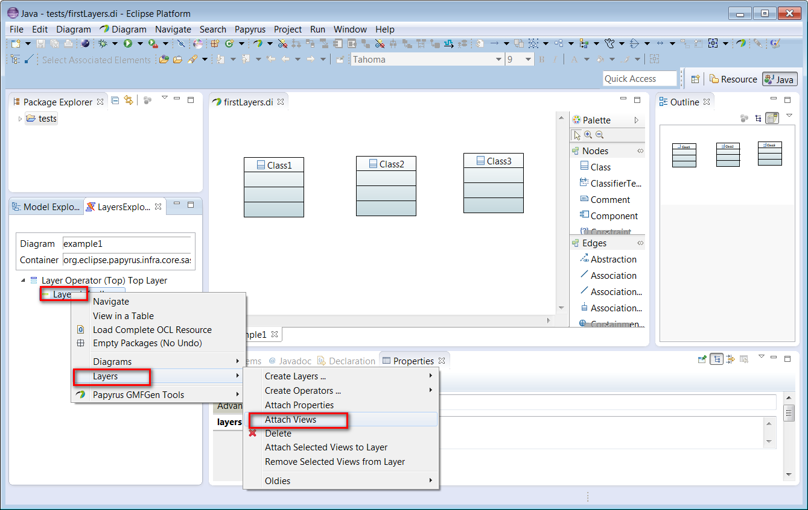
- A window open, select the 3 classes (1) and click 'ok (2)'.:
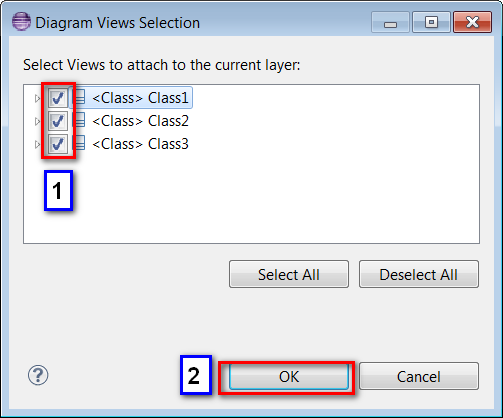
Attach some properties to the layer
A layer is used to control some properties of the attached views. It is necessary to attach the properties
controled by the layer. Once attached, it is possible to modify the values of this properties.
To attach some properties to the layer:
- In the LayersExplorer, select the defaul layer, right click->Layers->Attach Properties
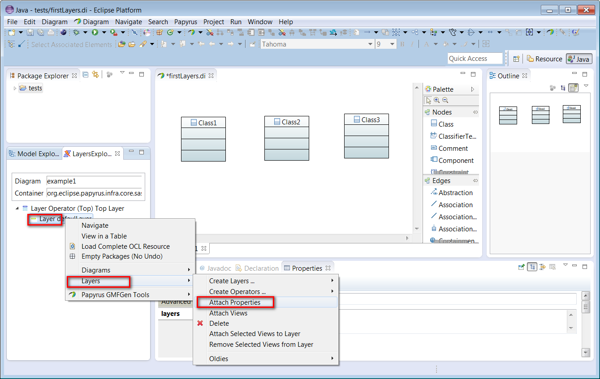
- The Attach Properties window open. Select properties as in the screenshot, and then 'ok'.
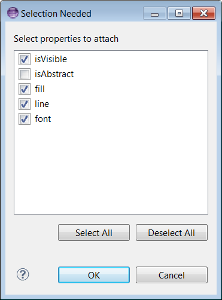
- The properties and the views are now attached to the layers. Properties for these views are computed according to the layer, and as a resul the fill color change. This is because the default value for 'fill color' of the layer property is different from the Papyrus value.
- You can open the property node in the LayersExplorer, select a property, and change its value in the Property view.
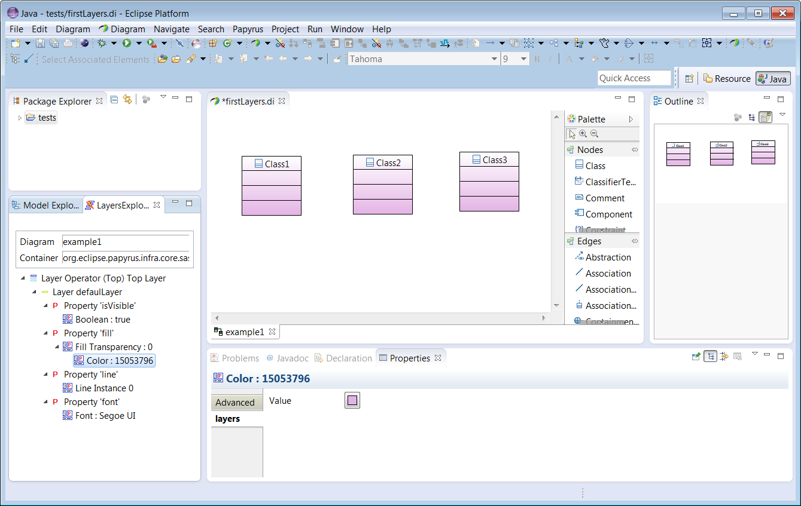
Add more layers
Now, add a new Layer in the Top Layer Operator:
- Select the Top Layer Operator,
- right click->Layers->Create Layers ...->Create Layer
- The new layer shoul appear as the first layer of the top layer operator.
- Attach the class1 and class2
- Attach the fill property
Change the value of an attached property
You can change the value of the fill property color for the layer.
- Open the node 'Color' of the 'Fill Property'
- click on the color picker in the Property view.
- Choose a new color (blue).
- The color should be applied on the 2 classes attached to the layer (Class1 and Class2).
- Class3 still have the color of the 'bottom' layer.
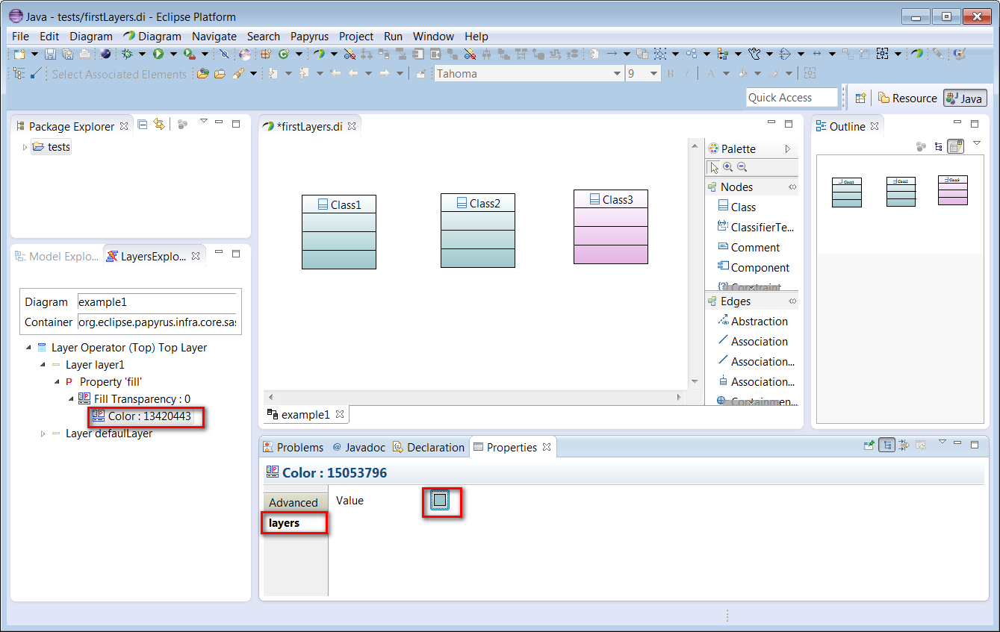
- Note that Class1 and Class2 color change to 'blue' because when computing the color for Class1, the first layer that attach both Class1and Property Fill is the Layer1. In this layer, the value for the Property Fill is 'blue', so it is for Class1. The same happen for class2.
Add the 3rd layer
- Add a 3rd layer
- Attach the 2 classes Class2 and Class3 to this layer.
- Attach the property 'Fill Color'
- Change the value of 'Fill Color' to orange
- Class2 and Class3 should change to orange.
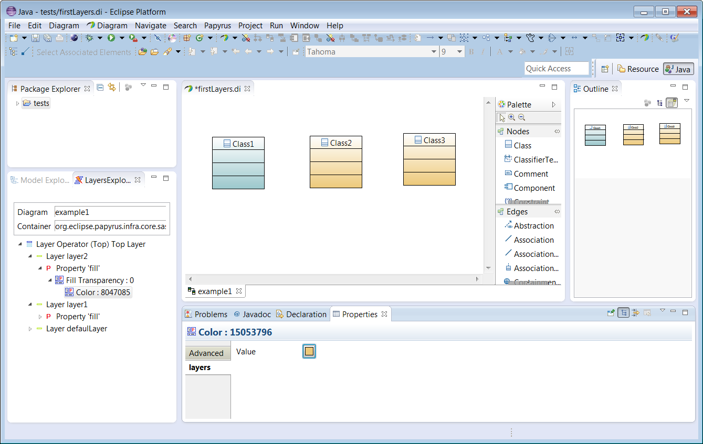
Disabling a Layer
It is possible to disable a layer without deleting it. A disabled layer do not participate in layer stack.
To disable a layer, select it in the LayersExplorer.
- Then in the PropertyView, open the Layers tab
- select or unselect the layer with 'Is Layer Enable".
- Note that in our example, disabling the Layer2 will change the color of the Class2 and Class3. Class2 take the color specified by layer1, and Class3 the color specified by bottomLayer.
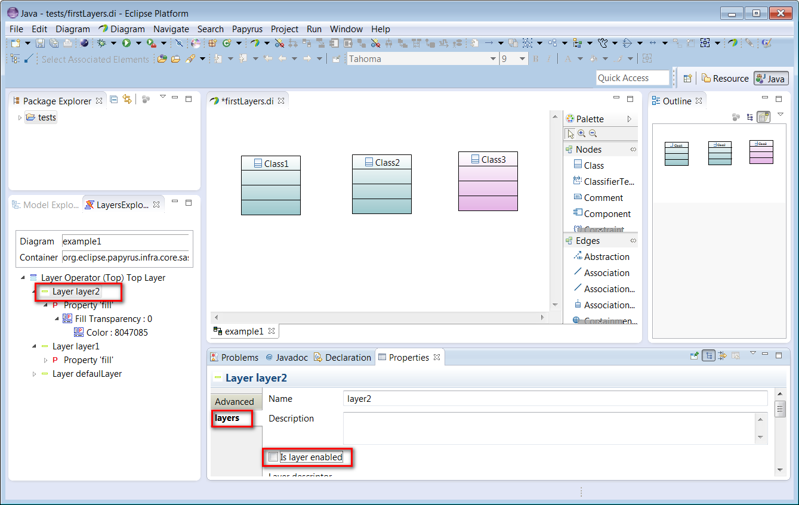
Layer Operators
Layer Operators are a kind of layer that can contain other Layers.
A layer operator is called like this because it is used to apply an 'operator' on its nested layers. The operator compute the property values for attached layers.
It is not possible to attach directly views or properties to a layer operator. But a layer operator still have a set of attached views and a set of attached properties. The values of these properties are the results of applying the operator on the properties of the nested layers. The set of the attached views is generally the union of the views attached to the nested layers.
There is different kind of 'layer operators', each one proposing a different way of computing the property values.
Top Layer Operator
The 'Top Layer Operator' contains layers that are ordered from top to bottom. It is called 'Top Layer Operator' because it return the top most value for a particular (view, property type) couple.
When computing the property value for a specified (view, property type), the Top Layer Operator return the first value found for this couple. It start from the top layer, and stop as soon as a layer as a value set for the specified (view, property type).